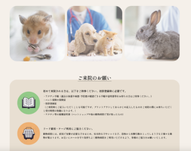
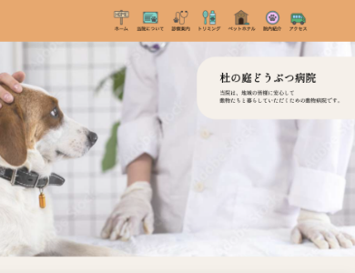

自主制作（架空サイト）
動物病院 公式サイト
Background
制作背景
- クライアント
- 沖縄県西原町に実在する動物病院
- ターゲット
-
- ペットを飼っている近隣住民。
- トリミング、ペットホテルの利用を検討している人。
- 目的・狙い
-
- 診察や予防接種、トリミングやペットホテルの利用を検討している人に来院してもらう。
- 院内の雰囲気を伝える。
- 要望
-
- 安心して来院してもらえるように、優しい雰囲気にしたい。
- 院内の様子が伝わるようにしたい。
Concept
コンセプト
- 与えたいイメージ
- 安心感、温かみ、親近感、清潔感
- フォント
- Shippori Mincho
- カラー
-
温かみを感じ、安心感のある印象にするため、落ち着いたベージュ系のカラーをベースに、アクセントカラーにオレンジを使用して統一感を意識しました。
- ◾️安心感や温かさを重視したデザイン
- オレンジやベージュなどの暖色系カラーを使用したり、イラストを取り入れたりすることで温かみのある雰囲気を表現した。また、院内の画像を多く掲載することで、雰囲気を具体的にイメージしてもらい親しみやすさを感じられるように意識した。
- ◾️欲しい情報に迷わず辿り着けるシンプルな構成
- 診察内容やアクセス情報など、ユーザーが特に欲しい情報に迷わず辿り着けるように、シンプルな構成にした。
- 作業工程
- 企画／設計／ワイヤーフレーム作成／デザイン／コーディング
- 使用ツール・言語
-
- HTML、SCSS（コーディング）
- XD（ワイヤーフレーム作成、デザイン）
- Photoshop、Illustrator（画像加工、トリミング）
- 制作期間
-
- ■ 1ヶ月
- 企画：4日
- 設計、デザイン：1週間
- コーディング：2週間
Point
ポイント


Overview
概要